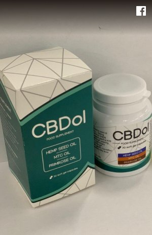

RECENZIILE CLIENȚILOR DESPRE COMPANIA CBDOL
CLIENȚII POVESTESC ÎN REȚELE DE SOCIALIZARE CUM ACESTE CAPSULE LE-AU SCHIMBAT VIEȚILE
Am cumpărat pentru mama mea, a suferit de mult timp de
hipertensiune arterială, deși este încă tânără - are doar 53 de ani. Suferă de tensiune
ridicată de aproximativ 7 ani, am încercat diferite pastile, da au o mulțime de efecte
secundare. Un medic m-a sfîtuit să încerc CDBol. Mama ia acest medicament de 3 săptămâni
deja, și este foarte fericită. Tensiunea arterială s-a stabilizat, nu mai crește.
Recomand.
Am avut hipertensiune din copilărie, din cauza asta am renunțat la
carieră sportivă, deși am arătat rezultate foarte bune la gimnastică. Am luat diferite
medicamente, dar niciunul nu mi s-a potrivit perfect: de la unele mă durea capul, de la
altele (scuze pentru detalii), am avut o diaree groaznică. În plus sunt foarte scumpe.
Am aflat despre CBDol de la o prietenă - mama ei se luptă cu tensiune ridicată. Am
comandat și eu medicamentul și timp de două luni mă simt o persoană sănătoasă!

Miranda R.
E un remediu excelent! Nu numai ajută la scăderea hipertensiunii
arteriale, ci și afectează, în general, întregul corp! Mă simt mai energică, dorm
suficient, nu mai fac griji pentru fleacuri. Viața mi se pare mai vie, mai ușoară,
mulțumesc foarte mult!

Eu am 60 de ani și am destul de des probleme cu tensiune. Toată
viața am dus un stil de viață sănătos - sport, yoga, mâncare vegetariană... Și sunt
foarte sceptică în privința antibioticelor și a altor medicamente sintetice.
Bineînțeles, dacă e ceva serios, atunci le voi accepta. Dar pentru a rezolva problema cu
tensiune, am căutat un medicament natural și CBDol-ul s-a potrivit perfect. Mă ajută
bine și nu conține nicio chimie!


Eugen F.
Am cumpărat acest remediu pentru soția pentru a combate depresia
(un câine care trăise cu noi de 18 ani a murit, iar soția a suferit această pierdere
foarte greu) – și a ajutat. Și apoi am citit că ajută și pentru hipertensiune (sufăr
deja de asta). Deci bem împreună cu soția - ea din stres, iar eu – pentru tensiune.
Ajută și pe ea și pe mine.

E un medicament incredibil !!! Sunt foarte fericită că am aflat
despre asta și vă mulțumesc site-ului dvs. pentru oportunitatea de a achiziționa acest
remediu miraculos. Mulțumiri speciale vreau să-i exprim serviciului de livrare și
managerilor care lucrează cu clienți. Totul a fost bine, repede, clar. Voi comanda din
nou!